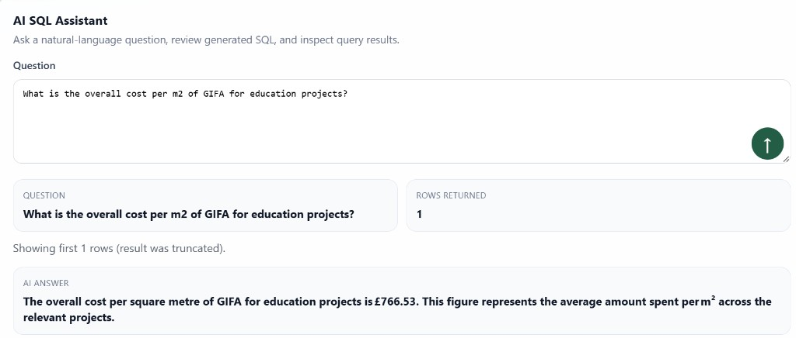

Research proposal · Applied AI · Data strategy
Applied AI for Construction costs
Costplan is a quantity surveying consultancy where project cost data lived in individual Excel workbooks, one per project. Comparing costs across projects meant manually reconciling different spreadsheets, relying on memory and experience, and with no formal database, benchmarking new estimates against past projects was done the same way.
What centralised data could unlock
Once the data problem was clear, the real question was what centralising it would actually enable. I pitched the company's directors on three capabilities the prototype then showed: a Power BI-ready reporting layer for benchmarking projects against each other, a natural-language layer for querying the data through a chat interface, and automated drafting for client reports — the same defined structure, rebuilt by hand, every time. The proof of concept ships the data model and secured access for the first of those three; the dashboard itself is a next step, not something built yet.
The data model
Construction cost data has real structure once you look past the spreadsheets. Costs break down into three levels. Level 1 is the top-line summary — "the frame cost £800k." Level 2 breaks that down into standardised elements (steel, concrete, decking), following a structure regulated by an industry body so that every contractor prices projects the same way, which is what makes comparison across projects possible at all. Level 3 goes further still, down to individual components within an element, like the layers of paint on a wall. Each level rolls up into the one above it: Level 3 into Level 2, Level 2 into Level 1.
That structure is also what makes old data worth keeping. Location and inflation indices are published by governing bodies too, so a ten-year-old project's costs can still be adjusted and compared fairly against a new one. Most of that historical data was sitting unused simply because nothing connected it together. My research was aimed at fixing this.
The warehouse is reached only through an explicit staging layer:
an uploaded workbook lands in stg.* first, where
every row is validated, before an idempotent commit step upserts
it into the dbo.Dim* / dbo.Fact*
tables (matched on project, contractor, and cost stage, so
re-ingesting a corrected workbook updates in place rather than
duplicating). Schema changes themselves are numbered,
checksum-tracked migrations — once applied, a migration is never
edited, only superseded by the next number, so the schema's
history stays auditable.

Full schema definitions and the ingestion engine that populates them are in the repo.
The AI layer
Report drafting for clients was manual and repetitive — the same structure, rebuilt by hand, for every project. I built two Groq-powered features to explore whether that could be solved properly rather than just sped up, each with its own guardrail problem to work through, since neither can be allowed to touch the warehouse directly or invent a number.
The query assistant takes a question like "Show top 10 Level2
elements by total cost" and returns generated SQL plus results,
behind four layers of guard rather than one: the generated SQL is
parsed as T-SQL and rejected outright if it isn't a single
SELECT; table references are checked against an
allowlist of warehouse views only, so staging and system tables
are unreachable even from a successfully parsed query; results
are row-capped and query-timed; and execution itself runs under a
dedicated read-only SQL login with no fallback to the ingestion
connection if anything upstream fails.
The report-drafting feature generates the client-facing tender report narrative itself — executive summary, commercial analysis, next steps — while keeping every number locked to a "deterministic facts" object built directly from the warehouse. Groq only writes the surrounding prose, explicitly instructed never to alter or invent a figure, with a templated fallback if the API call fails outright, then exports straight to Word or PDF. The point was testing whether the model could be trusted with the writing without ever being trusted with the numbers.

A real answer from the demo workbook — the assistant's generated SQL and row count are shown alongside the plain-English answer, not hidden behind it.
Where this landed
I presented the proof of concept to all three company directors, split into two phases: Phase 1 covering the database and Power BI-ready reporting, Phase 2 extending it with the AI layer. It was signed off, with a budget approved to build it out properly. Since then it's grown past prototype quality: a full Docker Compose stack, a three-job CI pipeline on every push and pull request, and a real test suite — unit, characterization, and integration tests run against an actual SQL Server container, with 86% line coverage on the ingestion engine specifically.
What I'd do next
- Build the actual Power BI dashboard against the shipped reporting views — the PoC wires up the data model and the read-only access, but no dashboard has been built on top of it yet.
- Take the pipeline from proof of concept to production, with monitoring and alerting around pipeline runs.
- Extend the AI layer with RAG, grounding the query assistant and report drafting in a wider set of project documents, not just the structured database fields.